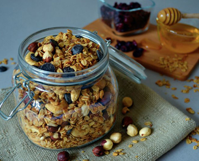

Вівсяні пластівці змішати з сиропом, додати кокосове масло, горіхи та ягоди. Запікати в духовці 30 хвилин при 150 °С.
- вівсяні пластівці (300г.)
- рсироп агави або клиновий (100г.)
- кокосове масло (50г.)
- горіхи (150г.)